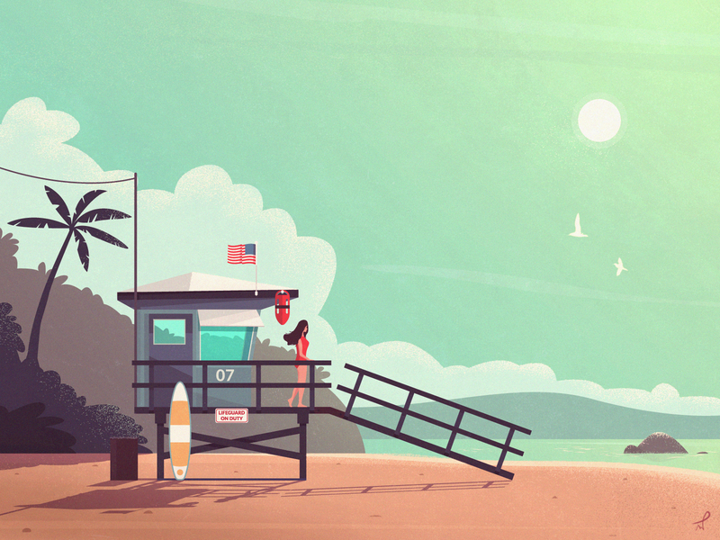
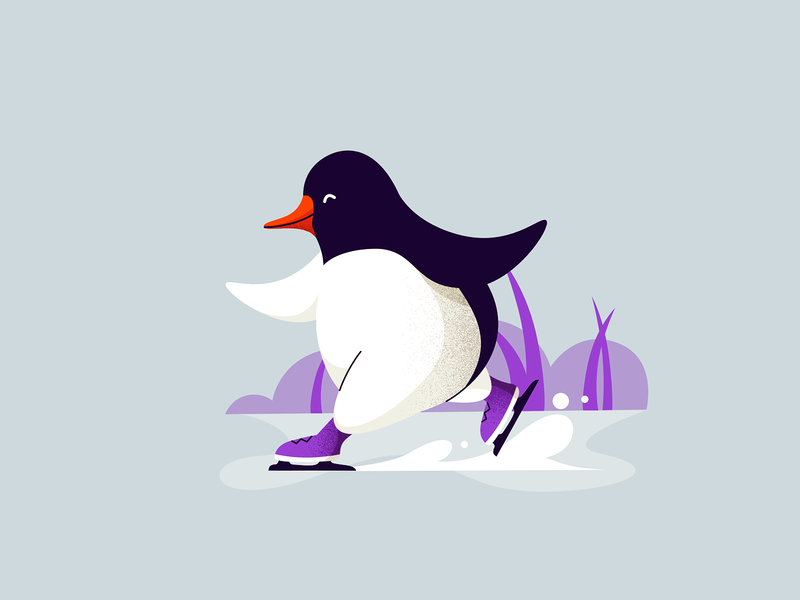
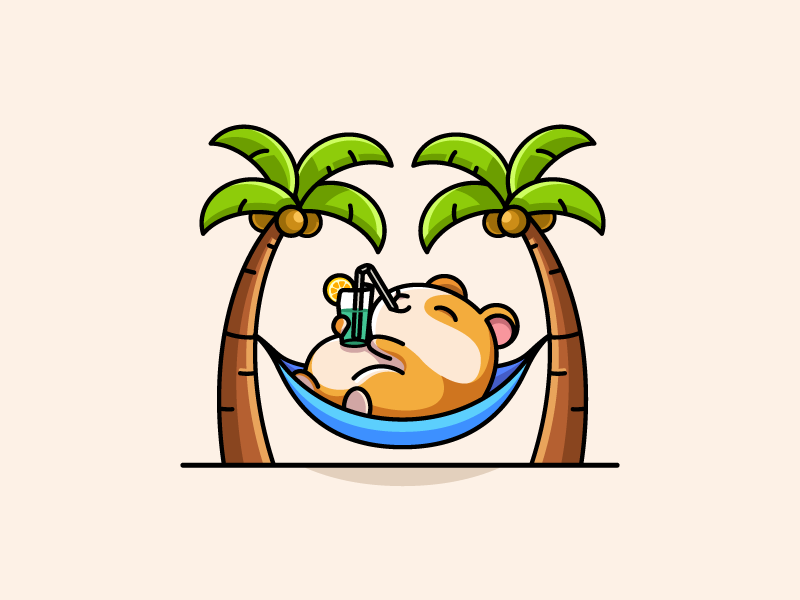

<!--  
	1.slider
	2.center
	3.click button to next page
	4.auto slider
-->

<DOCTYPE html>
<html lang="en">
<head>
	<meta charset="utf-8">
	<meta name="viewport" content="width=device-width, initial-scale=1, shrink-to-fit=no">
	<link href="style.css" rel="stylesheet">
	<title>Slider</title></head>
	<body> 
<div class="container">
	<div class="carousal" style="left:-600px;">
		
		
		
		
		

	</div>
	<div class="buttons">
		<span>1</span>
		<span>2</span>
		<span>3</span>
		<span>4</span>
		<span>5</span>
		</div>
<button  class="arrow arrow_left">&lt;</button>
<button class="arrow arrow_right">&gt;</button>

</div>


<script>
var carousal = document.querySelector(".carousal");
var next = document.querySelector(".arrow_right");
var prev = document.querySelector(".arrow_left");

next.onclick = function(){
    next_pic();
}

prev.onclick= function(){
   prev_pic();
}

function next_pic(){
	var newLeft;
	if(carousal.style.left === "-3600px"){
		newLeft = -1200;
	}else{
		newLeft = parseInt(carousal.style.left)-600;
	}
  carousal.style.left = newLeft+"px";
  index++;
  if(index>4){
	  index = 0;
  }
  showCurrentDot();
}

function prev_pic(){
    var newLeft;
	if(carousal.style.left === "0px"){
		newLeft = -1200;
	}else{
		newLeft = parseInt(carousal.style.left)+600;
	}
  carousal.style.left = newLeft+"px";
  index --;
  if(index < 0){
	  index = 4;
  }
  showCurrentDot();
  }

  //auto slider
  var timer = null;
  function autoPlay(){
	  timer = setInterval(function(){
		  next_pic();
	  },3000);
  }

  autoPlay();

  //stop auto slider when hover
  var container = document.querySelector(".container");
  container.onmouseenter = function(){
	  clearInterval(timer);
  }
  container.onmouseleave = function(){
	  autoPlay();
  }
  
  //show current page
  var index = 0;
  var dots = document.getElementsByTagName("span");
  function showCurrentDot(){
	  for(i=0; i<dots.length;i++){
      dots[i].className="";
	  }
	  dots[index].className = "on";
  }

 for (var i = 0; i< dots.length; i++){
            (function(i){
                dots[i].onclick = function () {
                    var dis = index - i;
                    if(index == 4 && parseInt(carousal.style.left)!==-3000){
                        dis = dis - 5;     
                    }
                    //与使用prev和next相同，在最开始的照片5和最终的照片1在使用时会出现问题，导致符号和位数的出错
                    if(index == 0 && parseInt(carousal.style.left)!== -600){
                        dis = 5 + dis;
                    }
                    carousal.style.left = (parseInt(carousal.style.left) +  dis * 600)+"px";
                    index = i;
                    showCurrentDot();
                }
            })(i);            
        }

	</script>

	</body>

</html>
